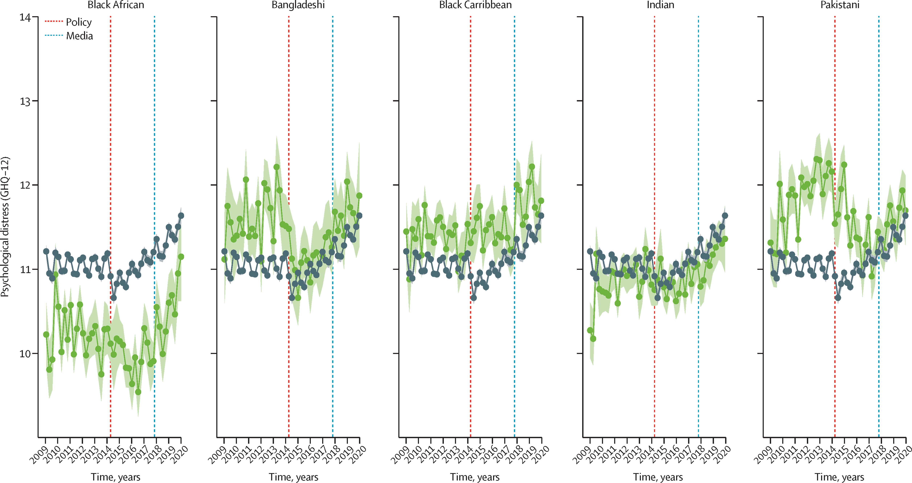

Measuring the effect of the hostile environment policy
In 2012, the UK Government announced a series of immigration policy reforms known as the hostile environment policy, culminating in the so-called Windrush scandal. Several hundred Commonwealth citizens who had settled legally in the UK since World War II were falsely identified as “undocumented” and, in many cases, deported. This situation particularly affected people from Black Caribbean backgrounds who had legally immigrated to the UK in the previous decades, known as the “Windrush Generation”, from the name of one of the ships used to carry people, mostly from Jamaica to England.
This work is part of a research grant funded by the Wellcome Trust under the “Collaborative Award” scheme. The project, called “Evaluating Policy Implementations TO Predict MEntal health [EPITOME]: a Bayesian hierarchical framework for quasi-experimental designs in longitudinal settings” aims at developing methodology to draw causal inference (or as close as possible to that!…) for longitudinal data, accounting for their hierarchical nature, the existence of time series components and spatial and spatio-temporal correlation.
Methodologically, the main idea is to use “quasi-experimental” designs, such as the “Interrupted Time Series”, to robustly rule out the impacts of potential confounders or biases in the assessment of changes in a particular outcome before and after a certain policy is introduced. In this specific case, we have data on nearly 60,000 participants in the UK Household Longitudinal Study, a large survey conducted at multiple time points and collecting a wide range of variables, including a widely used, self-administered questionnaire on psychological distress, the 12-item General Health Questionnaire (GHQ-12). The details of the methodology are available here.
Specifially, we have investigated the impact of the “Immigration Act 2014”, requiring landlords, employers, the NHS, banks and the police to check right-to-stay documentation, which was a key part of the Home Office hostile environment policy, seeking to target people without leave to remain in the UK. We also investigated the impact of the Windrush scandal, after news reports from late 2017 onwards documented how the UK government had, over the preceding decades, been wrongly detaining British subjects who had come over from the Caribbean or threatening them with deportation.
Our model analysis shows an increase in psychological distress in people of Black Caribbean heritage in the UK after 2014, relative to White study participants. This difference was a one-point decline on mental wellbeing on a scale of 1-36, which is slightly larger than the declines in mental health seen across the whole UK population at the time of the first Covid-19 lockdown, but, unlike the lockdown impact, the increased psychological distress in the Black Caribbean population persisted for several years. Black Caribbean study participants then experienced a further increase in psychological distress relative to the White population after the Windrush scandal. Further analysis revealed that the 2014 Act affected first generation Black Caribbean migrants more, while media coverage of the Windrush scandal affected British people of Caribbean heritage more.

In the figure above, green data points and lines represent mean GHQ-12 scores from the respective ethnic minority groups; black data points and lines represent mean GHQ-12 scores from the White ethnicity group. The red dashed line shows the implementation of the Immigration Act 2014 and the blue dashed line shows the start of the Windrush scandal media coverage. GHQ-12=General Health Questionnaire 12-item version. Our model did account for spatial correlation (based on the area in which respondents live), as well as the time trend.
Our study highlights the harms to mental health that the government’s hostile environment policy had on certain groups of people, in addition to other well-documented harms such as deportation, job loss, eviction, and discrimination. The mental health impacts may have stemmed from the direct impacts of such threats to people’s homes and livelihoods, but could also have resulted from a wider, pervasive sense of racial injustice and bias, faced by a group already experiencing systemic and sometimes institutionalised racism and discrimination. When the Windrush scandal dominated the news, there may have been a risk of retraumatisation for some people, while even for those not directly affected, the scandal put the spotlight on people with minoritised ethnic backgrounds.
Government policies can produce, maintain and exacerbate systemic inequities in mental health. Policymakers should consider the mental health impact of immigration policies, as they can impact not only prospective immigrants or people without leave to remain, but also those who are already settled legally in the country, and thus they should design them to minimise all harms including mental health inequalities. And appropriate statistical modelling and analysis can help uncover all this and improve decision-making and governmental action based on evidence.